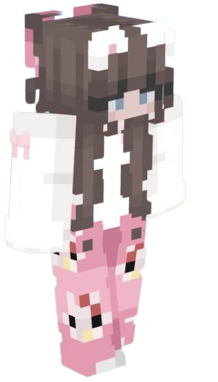

A veces dejo tostar mi piel en el sol, ¿sabes?
Ese calor me recuerda a tus abrazos que por 3 años he disfrutado desde el primero hasta el último.

Tanto así que aún siento el calor del primero.
No sé si era porque aquella vez la noche estaba fría y tú eres cálida, quizá fué por los nervios, no lo sé, pero, ese primer abrazo fué como agua para el sediento o consuelo para el más desesperado de los hombres.
Me sentí cual hombre que ha llegado a su hogar después de años de lucha.
Apenas estábamos hablando, ¿por qué habría de sentirme así?
Cada abrazo que nos hemos brindado ha estado cargado con los más profundos sentimientos,
tanto, que es imposible no sentir el calor en momentos posteriores a ellos.
Abrazos de bienvenida, abrazos de despedida, abrazos después del sexo, abrazos en el atardecer, abrazos de consolación, abrazos de reconcilio, abrazos de lamentos, abrazos llenos de orgullo, abrazos de perdón, abrazos después de un baile, abrazos de celos, abrazos de ternura, abrazos de calentura y abrazos de amor.